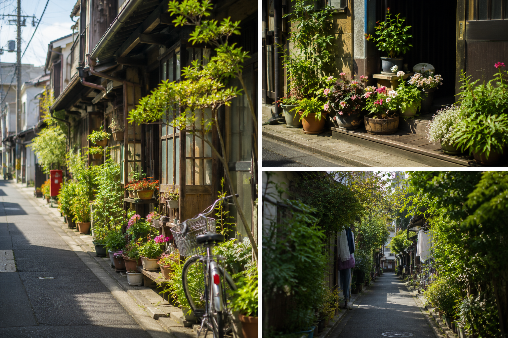
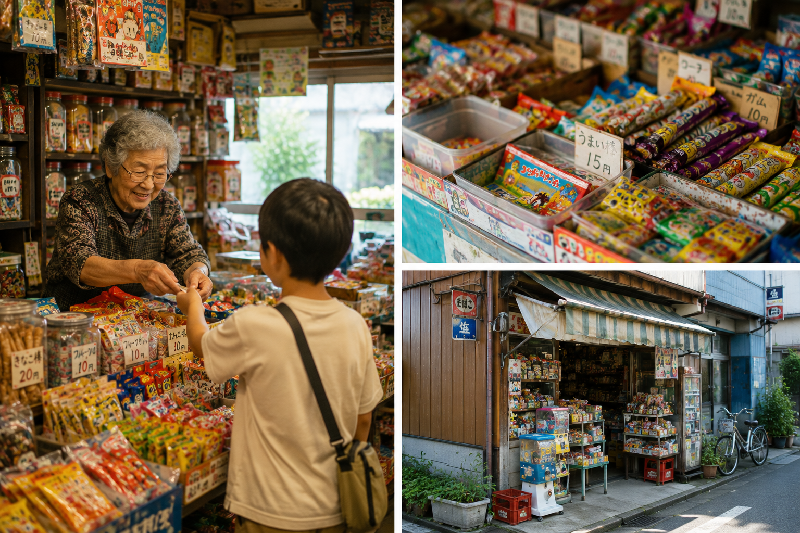
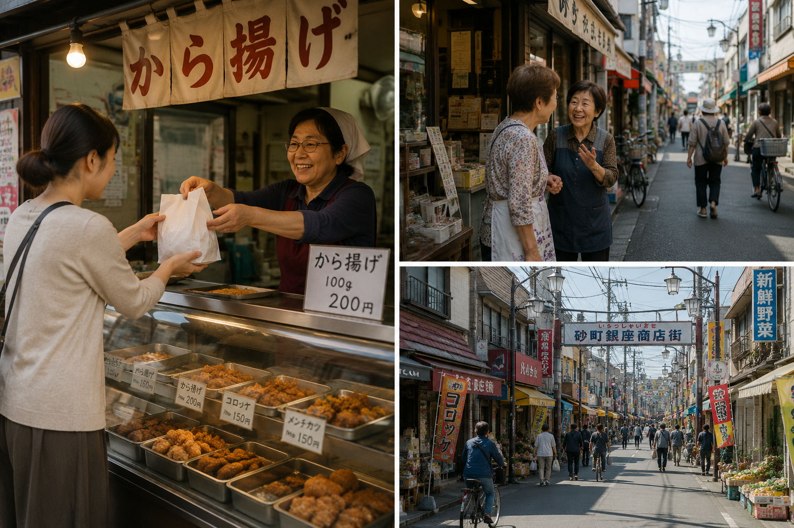
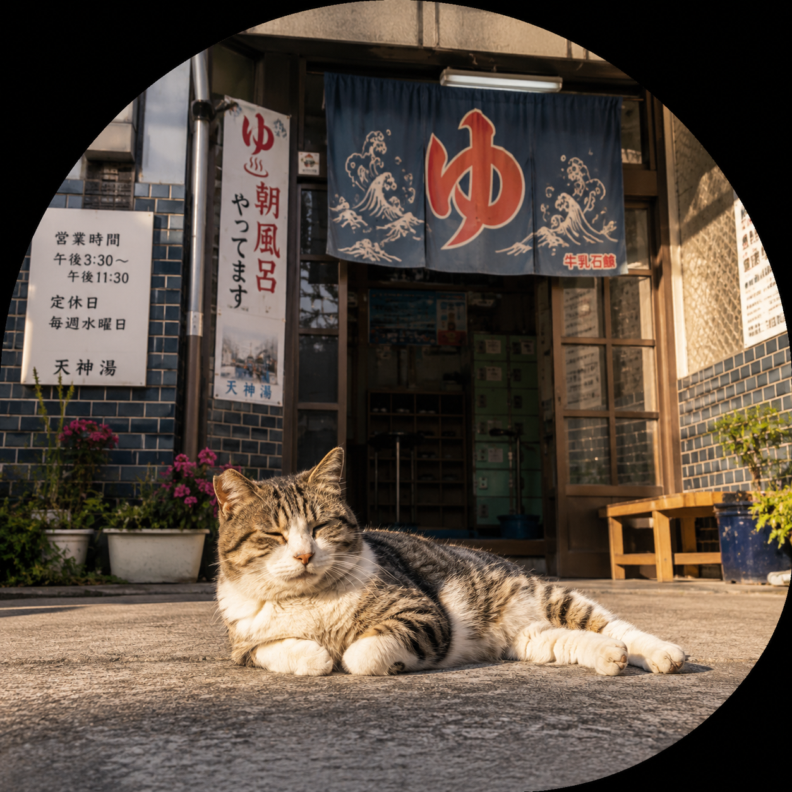
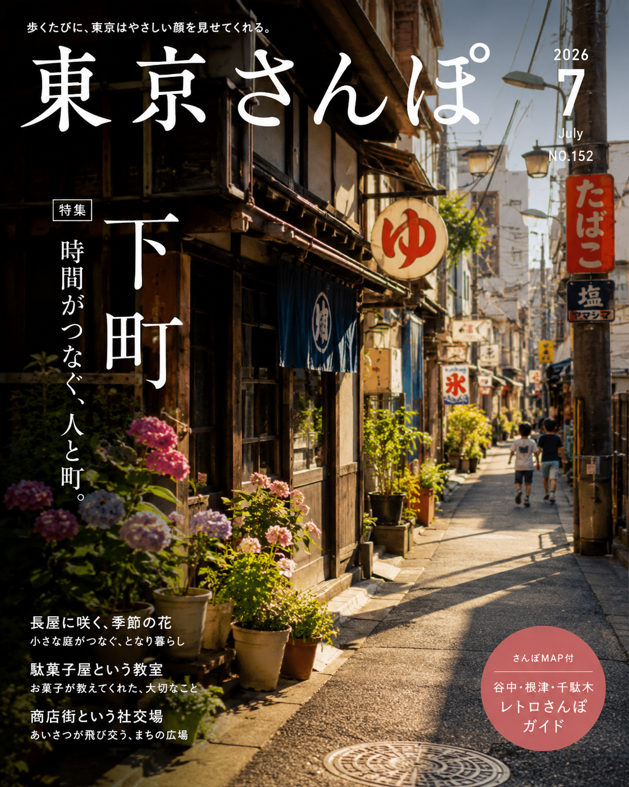

手土産特集
街歩きの最後に持ち帰りたい逸品たち
古くて新しい理由を訪ねて、下町へ。
2026.07
2026年、夏。
時代はAIをはじめ、誰もが子どものころに思い描いた
未来が現実になりつつある。
しかしそんな今でも変わらず、昔ながらの佇まいを残し、
明るくにぎやかな地域がある。
それが下町。
ひと時スマホを手放して、ゆったり散歩に行ってみよう。

下町はひとたび路地に入ると密度の高い
住宅街になる。
いわゆる「長屋」も健在である。
そして軒先には草花・樹木が生き生きと
茂っている。
ぐっと近いご近所同士の距離。
植物でその近さを和らげるためなのか、
単なる趣味なのか。
気の向くまま歩いていると、時折どんつき
（行き止まり）に出くわす。
これも下町の愉しみであり、魅力である。
駄菓子屋は近頃めっきり減ってしまったが
買い物風景は微笑ましく愛すべき光景だ。
店先に立つのは、たいていおばあちゃん。
孫ほどの子どもたちを相手に商売をする。
でもその存在は、単なる小売店ではない。
子どもたちはここで、はじめてひとりで
買い物をする。
限られたお小遣いをにぎりしめ、何を買う
か悩み、お金を払い、おつりを受け取る。
駄菓子屋は、小さな社会との最初の接点
なのだ。
そしてこの経験は、大人になっても忘れ
られない温かい思い出となる。


夕方になると活気にあふれ賑わう場所。
青果、鮮魚、精肉、お惣菜。
スーパーに行けば一か所ですべて買うこと
ができる。
それでも人は商店街に足を運ぶ。
それは誤魔化しの効かない対面で買う新鮮
な食材や、変わらない味があるから。
何より店主とのやり取りが楽しいからだ。
時が流れても変わらない会話が、今日も
店先にある。
商店街の賑わいは、そんな声で作られて
いる。
下町を訪ねて、たくさんのことに気付いた。
人は、密度の高さを花で和ませ、お菓子で学び、会話に活力をもらう。
何気ない日常がここにあり、当たり前に人とふれあう。
あるがままを受け入れ、互いに温かく接し、気持ちよく過ごす。
町そのものがそうした空気をまとっているからこそ、新たに訪れる人を
魅了する。
時代が変わっても、この空気は変わらず、未来へと受け継がれていくの
だろう。


または全国の書店でご購入ください
※架空の雑誌のため購入できません。
街歩きの最後に持ち帰りたい逸品たち
試合だけじゃない！街ごと楽しむ観戦ガイド
はじめてのライブハウス、その扉を開けてみる